0130 秒速覽：三篇各說一句話
method / dataset / survey — 三種論文，三種讀法
P1 · 感知端（方法論文）
「不用任何標注，讓模型自己在雜訊網路影片裡找出：完整的蘋果 → 切 → 切片的蘋果。」
把幾十種互動（切鳳梨、包盒子、綁繩結…）放進一個 multi-task 模型一起學，用任務之間的互斥當免費負樣本，state precision 從 0.35 拉到 0.49（相對 +40%）。
P2 · 評測端（資料集論文）
「食譜就是天然的多模態程序考卷——20K 食譜自動生成 36K 題。」
四種題型（文字克漏字、圖片克漏字、找不連貫圖、圖片排序）全自動生成、零人工標注。2018 年的神經基線考出來≈亂猜（25% 上下），宣告這條路很難。
P3 · 地圖端（survey）
「VideoQA 十年地圖：從『畫面裡是什麼』走向『為什麼、接下來會怎樣』。」
雙軸分類（factoid vs inference × 純視覺/多模態/知識庫）＋五大技術譜系。關鍵數字：NExT-QA 上人類 88.4 vs SOTA 55.0——推理題還遠遠沒解決。
02為什麼放在一起讀
一條軸線、一個敵人、三個角色
軸線：程序性理解（procedural understanding）。做菜、修東西、綁繩結——這類影片的重點不是「畫面裡有什麼」，而是東西怎麼變：物體狀態的轉換、步驟的先後、動作與結果的因果。P2（2018）最早把它做成多模態考卷時就點名：答題需要「追蹤 entities 和它們的 state changes」；P1（2022）就是直接把 state change 的感知從影片裡自監督學出來；P3（2022）則記錄整個 VideoQA 領域怎麼從 factoid（what/where/who）走向 inference（why/how/what-if——本質上就是狀態與因果）。
敵人：標注成本。時間軸上逐幀標「這裡是切之前、這裡是切的動作、這裡是切完」貴到不可行。三篇各自的回答：
P1 的回答：搜尋引擎當弱標注
拿「how to cut an apple」的搜尋結果當 video-level 噪聲標籤，時間定位全靠結構性約束自己長出來。連「哪些影片是垃圾」都由模型自己過濾。
P2 的回答：結構化資料自動出題
食譜天生有步驟結構（標題＋文字＋對齊圖片），從結構直接生成 QA——不用眾包。代價：題型受限於模板。
P3 的記錄：兩條路線的拉鋸
自動標注（MSVD-QA、MSRVTT-QA、TGIF-QA）便宜但有語言偏差與飽和問題；人工標注（ActivityNet-QA、NExT-QA）貴但考得動推理。survey 用 benchmark 結果表把這場拉鋸攤開。
角色互補。拼在一起是一條完整的研究鏈：P3 給你「這個領域在問什麼問題、用什麼工具」的地圖，P2 是「怎麼設計考卷去逼出程序性理解」的評測原型（以及考卷會被投機取巧攻破的早期教訓），P1 是「感知底層怎麼從無標注資料長出來」的方法示範。讀 P3 選題、拿 P2 的教訓設計評測、學 P1 的思路省標注。
03P1感知端 — 從雜訊影片自監督學「狀態變化」
Multi-Task Learning of Object State Changes from Uncurated Videos · CVPR 系 · 2022
問題設定
輸入：拿「How to wrap a box?」之類的 query 去搜尋引擎撈回來的未整理長影片——不保證動作真的出現、沒有任何時間標注，只有影片級的噪聲類別標籤。目標：在時間軸上定位三個東西——初始狀態（未包的盒子）、狀態改變動作（包）、結束狀態（包好的盒子）。
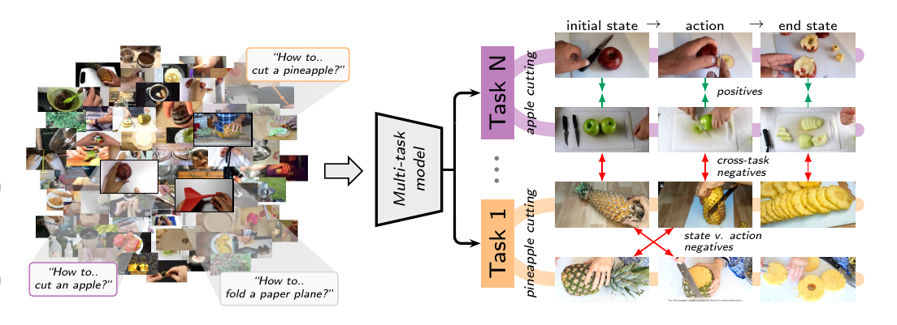
前作 Look for the Change（同作者群，2022）已經用 EM 式自監督做這件事，但每個互動類別訓一個獨立模型——不共享資訊（切蘋果和切鳳梨明明相關）、看到不含目標物體的影片會亂猜（沒有 background 類）、規模化困難。本文的回答：全部類別一個模型一起學。
架構選擇：四選一
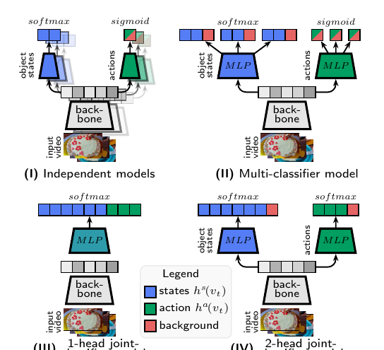
推論時用因果排序約束把三個分類器的分數綁在一起：
這一步同時給了兩個副產品：影片包含類別 c 的信心分數 p(c|v)（可以過濾搜尋撈回來的垃圾影片、也可以在類別未知的新影片上做偵測——前作做不到），以及三個時間位置的定位。
自監督訓練：五種偽標籤
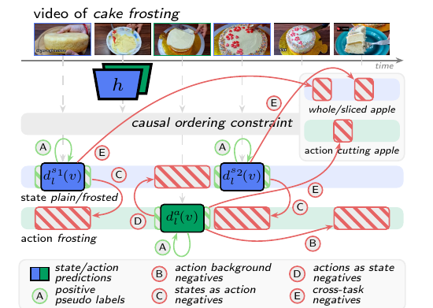
訓練是三步 EM 循環：① 用當前模型＋因果約束定位每支影片的三個位置 → ② 從定位構造偽標籤集 T（上面五種）→ ③ 用加權 cross-entropy 更新模型（沿用前作的 video-level noise adaptive weight 來降低垃圾影片的權重）。妙處在 (C)(D)(E) 全是免費的結構性知識：「有狀態的地方就沒動作」「有動作的地方就沒狀態」「切鳳梨的正樣本天然是切蘋果的負樣本」——multi-task 設定讓這些約束第一次變得可用。
工程細節一則：因為偽標籤只覆蓋每支影片固定數量的幀（ChangeIt 上約 25 幀/支，不到 10% 的幀），可以先推論選幀、再只對選中的幀做前向＋反向——記憶體十分之一，讓 ViT-L/14 CLIP backbone 端到端微調變得可行（前作只能凍結特徵）。
結果
| 方法 | ChangeIt St prec. | ChangeIt Ac prec. | COIN Ac prec. |
|---|---|---|---|
| Random | 0.15 | 0.41 | 0.42 |
| Merlot Reserve（zero-shot） | 0.27 | 0.57 | 0.69 |
| CLIP ViT-L/14（zero-shot） | 0.30 | 0.63 | 0.65 |
| VideoCLIP（zero-shot） | 0.33 | 0.59 | 0.72 |
| Alayrac et al. 2017 | 0.30 | 0.59 | 0.57 |
| Look for the Change 2022（前作） | 0.35 | 0.68 | 0.73 |
| 本文（ViT-L/14 端到端微調） | 0.49 | 0.80 | 0.83 |
State precision 相對前作 +40%、action precision +18%。注意 zero-shot 大模型（CLIP、VideoCLIP、Merlot Reserve）全部大幅落後——影像-語言預訓練給得了語意，給不了「狀態 vs 動作」的時序判別。另外兩個亮點：
- Zero-shot 遷移到第一人稱視角：模型在第三人稱網路影片上訓練，直接測 EPIC-KITCHENS（St mAP 0.38 vs 前作 0.12）和 Ego4D（0.37 vs 0.20）——為此作者手工標注了 23 小時的 egocentric 影片當測試集。誠實註記：優勢集中在 state mAP；Ego4D 的 action mAP 上 VideoCLIP（0.49）其實略高於本文（0.48），所以論文只聲稱贏過「image-based 和大多數 video-based zero-shot 方法」。
- Ablation（Table 1）：架構 (IV)＋全部五種偽標籤 = 0.47/0.77（凍結 backbone）；對照組——多分類頭架構 (II) 只用前作的 (A)(B) 偽標籤 = 0.36/0.68，與前作打平。提升主要來自跨任務負樣本 (E) 和狀態↔動作互斥 (C)(D)。
- 副產品：影片分類也順便贏了（附錄 Table 4，667 支人工確認的測試影片）：本文模型從沒被訓練做分類，但用 ĉ = argmax p(c|v) 分類 ChangeIt 影片達 0.90，高於 zero-shot CLIP（0.82）和一個在測試集上掃超參數挑最好結果的 linear probe（0.88）。更妙的是：改用本文模型選出的狀態/動作幀當特徵再訓 linear probe，直接到 0.98——說明模型定位的幀就是影片裡資訊最濃的幀。
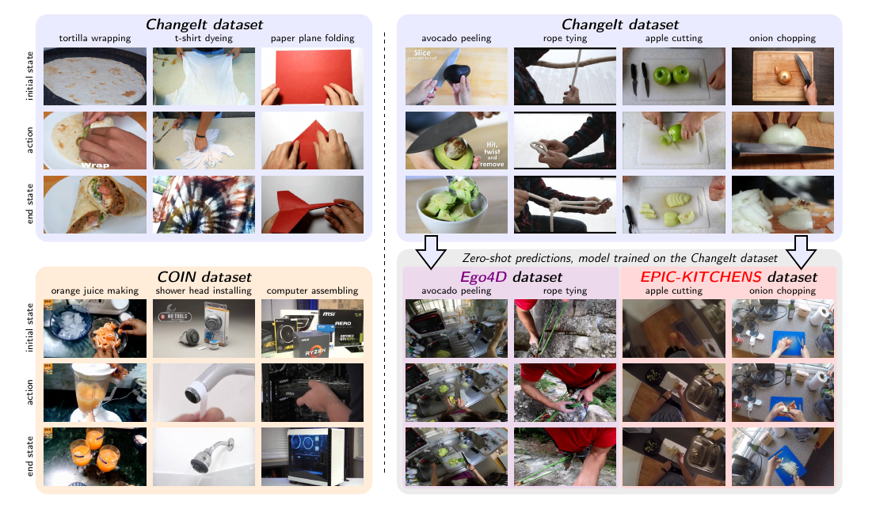
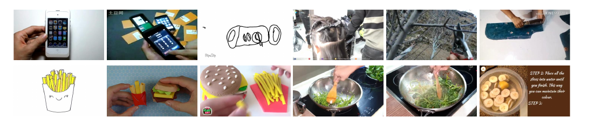
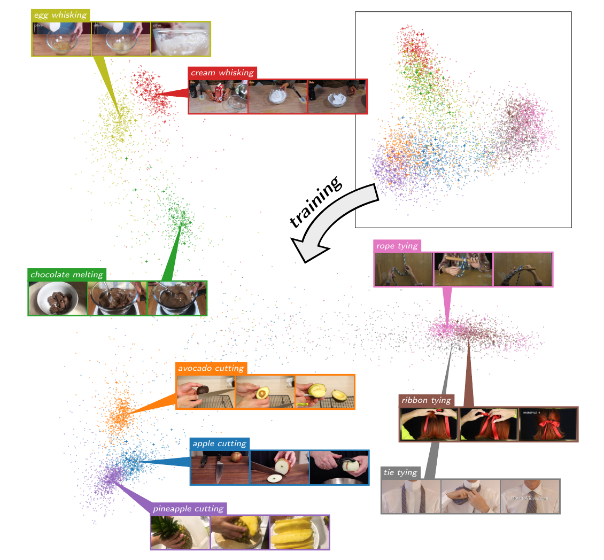
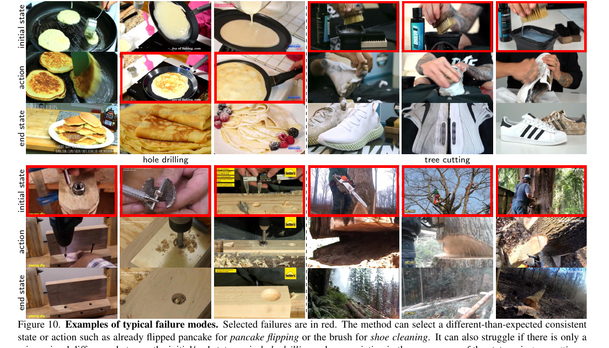
04P2評測端 — RecipeQA：食譜當考卷
RecipeQA: A Challenge Dataset for Multimodal Comprehension of Cooking Recipes · EMNLP 2018
為什麼是食譜
食譜是天然的程序性文本：有明確目標、逐步指令、步驟間有時序依賴，而且 Instructables 這類網站上每一步都附使用者實拍的圖片（不是教科書插圖）——天生的「文字步驟 ↔ 圖片」對齊資料。論文的類比很妙：每份食譜就是一個演算法。理解它需要追蹤實體與狀態變化——這正是 P1 六年後在感知端攻克的東西。
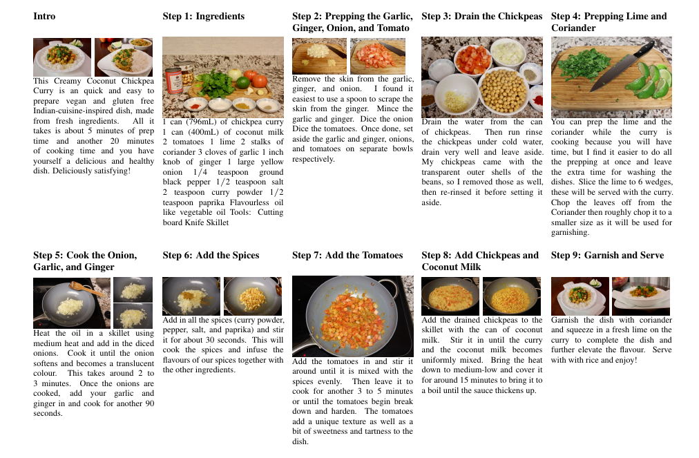
資料集：20K 食譜、36K 題、零人工標注
| train | valid | test | |
|---|---|---|---|
| 食譜數 | 15,847 | 1,963 | 1,969 |
| 平均步驟數 | 5.99 | 6.01 | 6.00 |
| 平均圖片數／食譜 | 12.67 | 12.74 | 12.65 |
| 題目數 | 29,657 | 3,562 | 3,567 |
| — textual cloze | 7,837 | 961 | 963 |
| — visual cloze | 7,144 | 842 | 848 |
| — visual coherence | 7,118 | 830 | 851 |
| — visual ordering | 7,558 | 929 | 905 |
收集管線的取捨都很務實：只抓熱門食譜（人氣當品質代理）、語言偵測濾非英文、留 3–25 步的食譜、丟掉第一步（幾乎都是「我為什麼愛做這道菜」的閒聊）、從步驟標題裡刪掉顯式的序號（不然排序題會被作弊）。乾擾項（distractor）生成有巧思：先找 k=100 個最近鄰，再用 adaptive neighborhood 剔除太像的——「像到有對抗性、但不像到可以替換正解」。文字距離用 WMD、圖片距離用 ResNet-50 特徵。
四種題型 = 四種理解能力
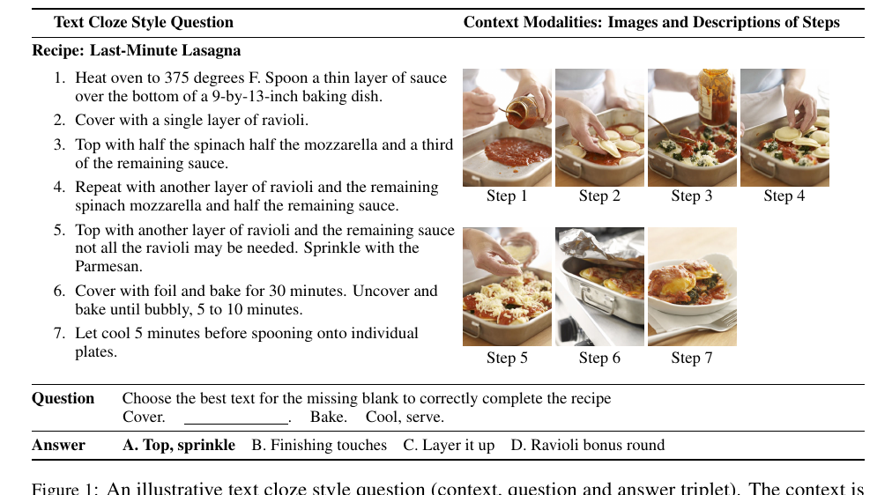
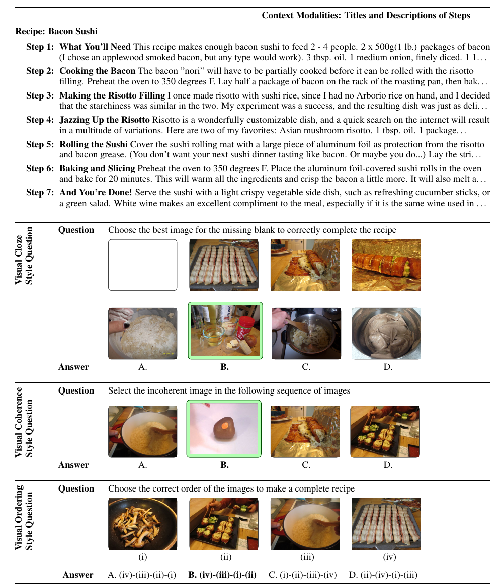
基線結果：2018 年的神經模型全軍覆沒
| 模型 | Textual Cloze | Visual Cloze | Visual Coherence | Visual Ordering |
|---|---|---|---|---|
| 亂猜 | 25.0 | 25.0 | 25.0 | 25.0 |
| Hasty Student（不看 context 的相似度啟發式） | 26.89 | 27.35 | 65.80 | 40.88 |
| Impatient Reader（text only） | 28.03 | – | – | – |
| Impatient Reader（multimodal，3 層 LSTM） | 29.07 | 27.36 | 28.08 | 26.74 |
兩個信號都值得記住：
- 神經模型≈亂猜：Impatient Reader 四個任務全在 26.7–29.1，程序性多模態理解對 2018 年的 LSTM＋attention 完全無解。多模態版比 text-only 版在 textual cloze 上好一點（29.07 vs 28.03）——圖片有用，但杯水車薪。
- 完全不讀 context 的 Hasty Student 在 coherence 上考 65.8：只算「哪張圖跟其他圖平均最不像」就贏過所有神經模型 37.7 分——題型本身有視覺相似度捷徑。這是 benchmark 設計的經典教訓：亂入的圖片本來就在視覺上突兀，根本不需要讀食譜。P3 survey 裡 TGIF-QA 的語言偏差問題，是同一個病的四年後複發。
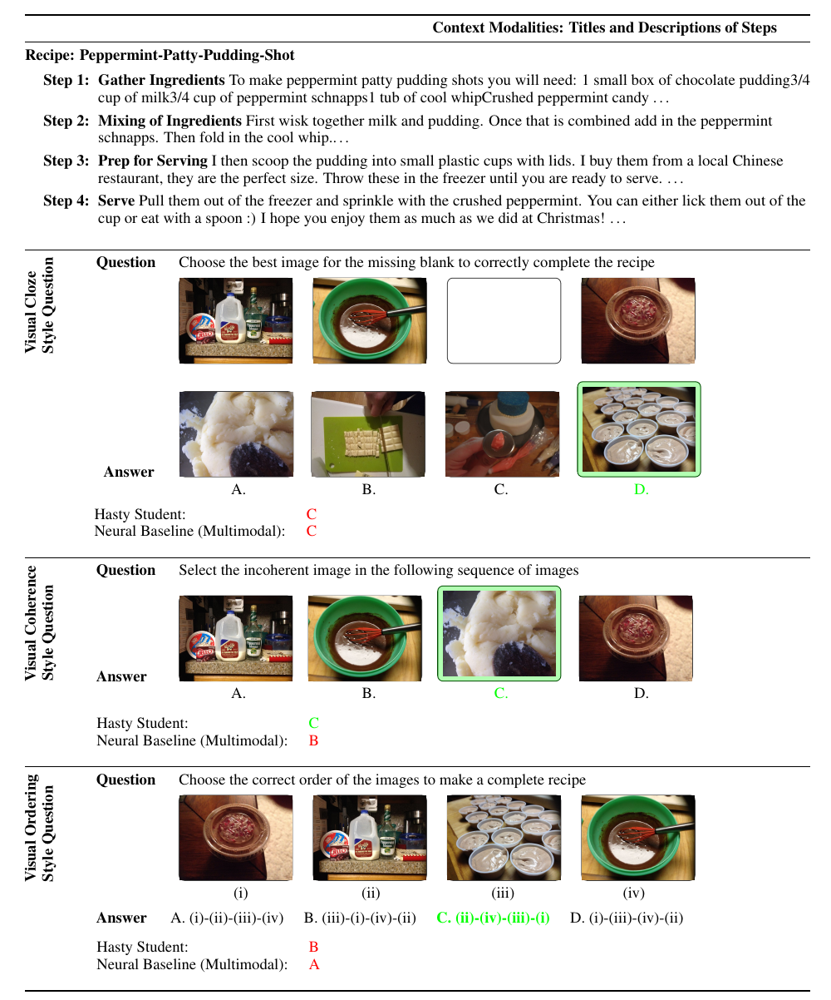
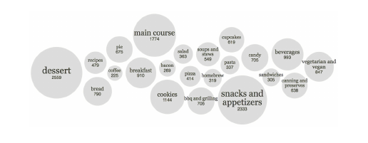
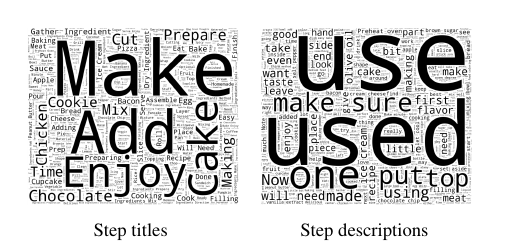
05P3地圖端 — VideoQA Survey：領域全景
Video Question Answering: Datasets, Algorithms and Challenges · EMNLP 2022
雙軸分類：這張圖就是整篇 survey
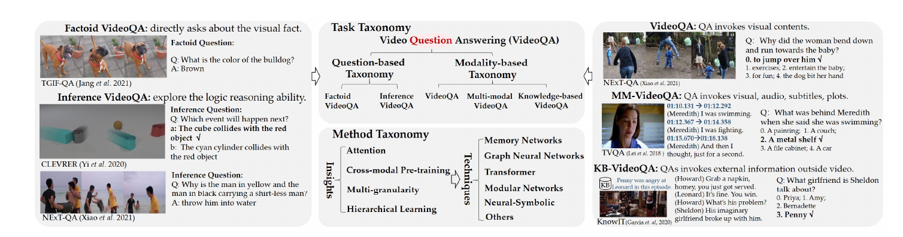
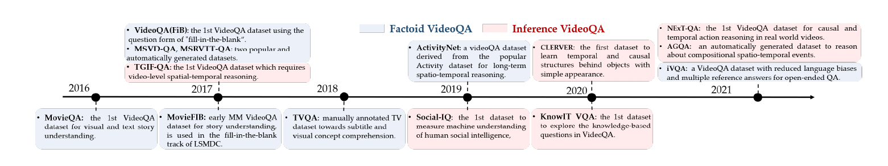
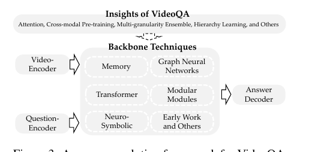
技術譜系一句話版
| 技術家族 | 機制一句話 | 代表方法 |
|---|---|---|
| 早期 attention | 雙 LSTM＋時空注意力挑關鍵幀／關鍵區域 | STVQA、DLAN、QueST |
| Memory | 記憶槽存長序列，讀寫操作撈遠處資訊——長影片（電影/劇集）標配 | CoMem、HME、PAMN |
| GNN | 物件/幀/片段當節點建圖，關係推理靠訊息傳遞——inference 題的主力 | LGCN、HGA、PGAT、HAIR、P3D-G（2.5D 場景圖） |
| Modular | 可重用神經單元（如 CRN）階層堆疊，架構隨題型組裝 | HCRN、HOSTR、HQGA |
| Neuro-symbolic | 影片解析成物件表示＋問題編譯成程式，符號執行做因果推理——合成資料上很神，真實影片還不行 | NS-DR（CLEVRER） |
| Transformer ＋ 跨模態預訓練 | 網路級影音文本先預訓練再微調——factoid 題的統治者 | ClipBERT、VQA-T（69M QA）、MERLOT（180M 片段）、VIOLET |
成績單怎麼讀
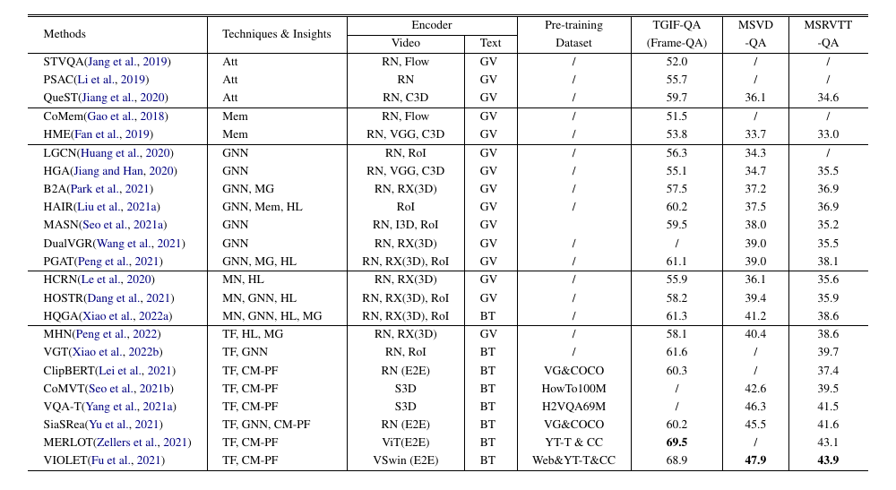
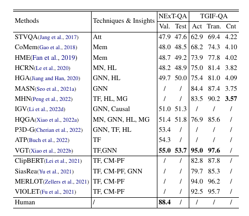
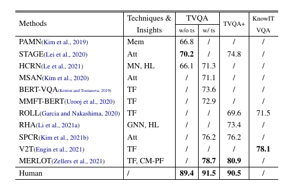
NExT-QA（因果／時序推理）：五年進步 7 分，離人類還有 33.4 分
Survey 給的未來方向四條：從辨識到推理（「what is」已不是核心，causal/temporal 關係才是 north star）；知識 VideoQA（常識與領域知識注入）；更有效率的跨模態預訓練＋怎麼把預訓練紅利搬到推理題；可解釋性、魯棒性、泛化（AGQA 2.0 用組合一致性診斷模型是真懂還是背答案）。
06三篇對照：監督策略、評測哲學、時代位置
同一條軸線上的三個切面，互相解釋
總對照表
| P1Object States | P2RecipeQA | P3VideoQA Survey | |
|---|---|---|---|
| 論文類型 | 方法（感知） | 資料集（評測） | Survey（地圖） |
| 年代 | 2022-11 | 2018-09（EMNLP） | 2022-11（EMNLP） |
| 要回答的問題 | 不給時間標注，能不能學會定位「狀態→動作→狀態」？ | 機器能不能讀懂多模態的程序性指令？ | VideoQA 這個領域走到哪、卡在哪？ |
| 資料 | ChangeIt 34K（uncurated）＋COIN 11K（curated）支網路長影片 | 19,779 份食譜、250,730 張實拍圖、36,786 題 | 覆蓋 40+ 資料集、30+ 方法 |
| 對抗標注成本的武器 | 搜尋 query 當噪聲標籤＋結構性約束自監督 | 結構化步驟資料自動出題（模板＋對抗性乾擾項） | 記錄自動 vs 人工標注路線的優劣與教訓 |
| 核心結構 | causal ordering constraint（當監督） | visual ordering task（當考題） | factoid→inference 的領域遷移（當趨勢） |
| 關鍵數字 | state prec. 0.35→0.49（+40% rel）；Ego4D zero-shot 0.37 | 神經基線 26.7–29.1 ≈ 亂猜 25；捷徑基線 65.8 | NExT-QA 人類 88.4 vs SOTA 55.0；TGIF 已飽和 97.6 |
| 一句話定位 | 感知底層怎麼從無標注長出來 | 怎麼出考卷逼出程序理解（＋考卷被攻破的教訓） | 選題指南＋防坑手冊 |
對照一：三種「不標注」的姿勢
P1 和 P2 是同一個困境的兩種解法。P1 說：標注不可得，那就讓結構當老師——「動作在兩個狀態之間」這條先驗加上任務間互斥，硬是從搜尋引擎垃圾堆裡蒸餾出時序定位。P2 說：標注不可得，那就找天生自帶結構的資料——食譜的步驟結構讓 QA 生成完全自動化。P3 then 記錄了這兩條路在 VideoQA 的對應版本：自動（或半自動）生成的資料集（MSVD/MSRVTT/TGIF）撐起了領域的頭五年，但語言偏差與飽和逼著大家回頭做人工標注的推理型資料集（NExT-QA、AGQA）。自動化省下的成本，最後用 benchmark 的可信度付了利息。
對照二：捷徑（shortcut）的兩次現形
2018 · RecipeQA 的 coherence 題
不讀食譜、只算圖片相似度的 Hasty Student 考 65.8，比讀了 context 的神經模型高 37.7 分——亂入的圖天生突兀，考題洩題了。
2022 · TGIF-QA 的飽和
VGT 刷到 Action 95.0／Transition 97.6，survey 點名語言偏差嚴重：不看影片光讀題也能答。修補工程隨之出現：TGIF-QA-R 重新分配答案去堵 answer bias、iVQA 專門降語言偏差、AGQA 2.0 用組合一致性診斷真懂假懂。
同一個病理跨了四年、兩種模態：benchmark 一旦存在可利用的統計捷徑，模型一定先學捷徑。這也反過來解釋 P1 為什麼可信——它的評測是「在時間軸上指出正確的幀」，precision@1 沒有選項可以投機。有趣的反例：同在 TGIF-QA 裡的 counting 題（迴歸任務）完全沒飽和——MSE 只從 4.22 磨到 3.57，而且預訓練大模型（ClipBERT／MERLOT／VIOLET）乾脆都不報這一項。數東西這種需要精確時序感知的題型，至今仍是所有技術路線的盲區。
對照三：預訓練大模型的三種成績
- P3 的記錄：跨模態預訓練統治 factoid（MERLOT 69.5 vs 無預訓練最佳 61.6），在 inference 上也有效但離人類還很遠。
- P1 的實測：CLIP/VideoCLIP/Merlot Reserve 直接 zero-shot 做狀態定位全部慘敗（0.27–0.33 vs 本文 0.49）——但 CLIP 當 backbone 再用結構約束微調就是最強配置。預訓練給語意底盤，結構約束給時序判別，兩者是互補不是替代。
- P2 的年代：2018 年還沒有這些武器——LSTM＋attention 在程序性理解上≈亂猜，正好當這波預訓練紅利的「前測基線」。
07侷限與坑
各自承認的＋對讀出來的
08我的重點筆記
跨三篇的可帶走結論
- 結構是免費的監督。P1 的全部提升來自把先驗寫成約束：時序（動作在狀態之間）、互斥（有狀態處無動作）、跨任務（你的正樣本是我的負樣本）。沒有一條需要標注。設計自監督任務時先問：這個 domain 有什麼結構是白送的？
- 出考卷比考試難。P2 的 coherence 題和 P3 記錄的 TGIF 語言偏差是同一課：benchmark 的可信度取決於「捷徑基線考幾分」。設計評測時，Hasty Student 式的 sanity-check 基線（不看 context 能考幾分）應該是標配，不是選配。
- 預訓練給語意，給不了結構。CLIP zero-shot 定位狀態變化只有 0.30，但 CLIP backbone＋結構約束微調 = 0.49。大模型時代的正確姿勢不是「換更大的模型」，是「大模型當底盤＋領域結構當方向盤」。
- Factoid 已死，inference 未捷。P3 的兩張成績單合起來就是研究選題指南：TGIF 97.6 分的題不要再刷；NExT-QA 33.4 分的人機差距（88.4 vs 55.0）才是真問題。而 inference 的本質——時序、因果、狀態變化——P1 已經給了感知端的答案，推理端還空著。
- 資料集的生命週期約四年。2017 自動生成資料集量產 → 2021 被指出偏差＋飽和 → 新一代人工推理資料集接棒。做 benchmark 的人應該預設自己的資料集會被攻破，把診斷工具（AGQA 2.0 的組合一致性）一起設計進去。
- 三種論文的讀法：survey 先讀「未來方向」和成績單的腳註（哪些資料集被點名有問題），dataset 論文先讀基線表（捷徑基線 vs 神經基線的差距），method 論文先讀 ablation（提升到底來自哪一條設計）。這三篇各自都是好範本。